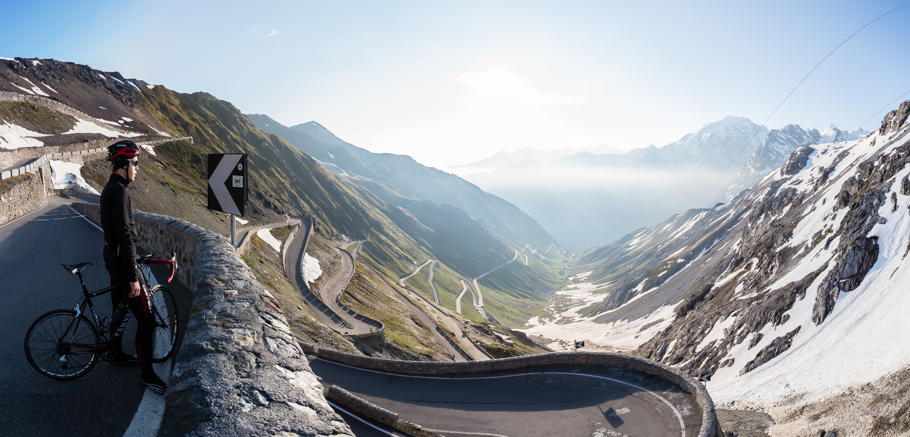
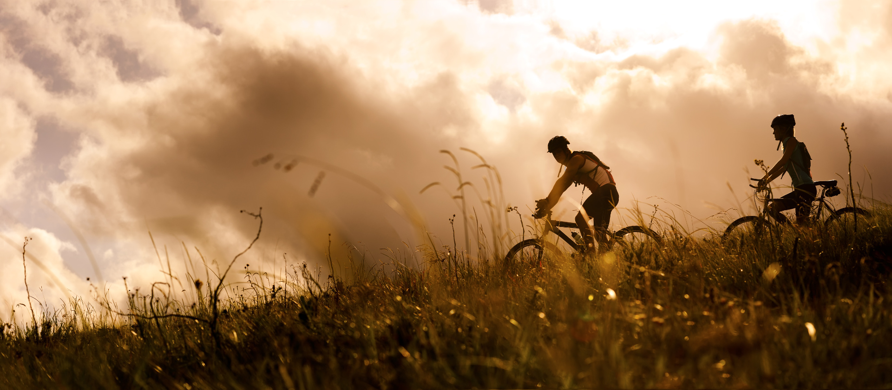

We offer cycling tours and/or lodging in the heart of the Midi-Pyrénées, Southern France, unquestionably, one of the most beautiful parts of the world.
At LIH, we believe that cycling is undoubtedly one of the finest ways to get around and to see the world. The tranquility and the freedom, all of which, make the adventure, unforgettable. Over the course of your cycling trip/tour, you will be treated to some of the most beautiful countryside, challenging terrains, delicious and varied foods and lots of smiles.
If you decide to venture off on your own and/or with friends, we also offer bed and board.
Aside from cycling, we are planning on offering walking and mountain climbing in the near future. We want people to rediscover nature, by understanding how important it is to live a healthy lifestyle, by doing the things they love.
In today's society, we all to easily get caught up in our 9 to 5 jobs and tend to neglect our bodies and mind. Therefore, we want to assist people, in order to reclaim their health and as a consequence, reconnect them to self and what better way, than to be surrounded by stunning scenery and mountainous terrain.
If you want a cycling tour with a difference, come and see us, for what will be an unforgettable, life changing experience!
